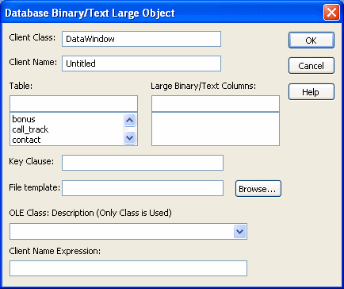
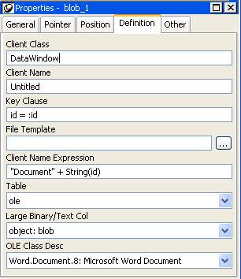

You can create OLE columns in a DataWindow object. An OLE column allows you to:
You can modify the document in the server, then update the data in the DataWindow object. When the database is updated, the OLE column, which contains the modified document, is stored in the database.
 Database support for OLE columns If your database supports a blob datatype, then you can implement
OLE columns in a DataWindow object. The name of the datatype that supports
blob data varies. For information on which datatypes your DBMS supports,
see your DBMS documentation.
Database support for OLE columns If your database supports a blob datatype, then you can implement
OLE columns in a DataWindow object. The name of the datatype that supports
blob data varies. For information on which datatypes your DBMS supports,
see your DBMS documentation.
This section describes how to create an OLE column in a DataWindow object. The steps are illustrated using a table that you can create in the Database painter. It must contain at least two columns, id and object:
 To create the database table:
To create the database table:
In the Database painter, create a table to hold the blob (binary large-object) data.
The table must have at least two columns: a key column and a column with the blob datatype. The actual datatype you choose depends on your DBMS. For example, in SQL Anywhere, choose long binary as the datatype for the blob column. For information about datatypes, see your DBMS documentation.
Define the blob columns as allowing NULLs (this allows you to store a row that does not contain a blob).
The following procedure describes how to add a blob column to a DataWindow object.
 To add a blob column to a new DataWindow object:
To add a blob column to a new DataWindow object:
Create a new DataWindow object.
Specify the table containing the blob as the data source for the DataWindow object.
Be sure to include the key column in the data source. You cannot include the blob column in the data source; if you try, a message tells you that its datatype requires the use of an embedded SQL statement. You add the blob column later in the DataWindow painter workspace. (If you use Quick Select, the blob column is not listed in the dialog box.)
Select Insert>Control>OLE Database Blob and click where you want the blob column in the Design view.
The Database Binary/Text Large Object dialog box displays:

The following procedure describes the properties you need to set for the blob column.
 To set properties for a blob column:
To set properties for a blob column:
(Optional) Enter the client class in the Client Class box. The default is DataWindow.
This value is used in some OLE server applications to build the title that displays at the top of the server window.
(Optional) Enter the client name in the Client Name box. The default is Untitled.
This value is used in some OLE server applications to build the title that displays in the title bar of the server window.
In the Table box, select the database table that contains the blob database column you want to place in the DataWindow object.
The names of the columns in the selected table display in the Large Binary/Text Columns list.
In the Large Binary/Text Columns box, select the column that contains the blob datatype from the list.
If necessary, change the default key clause in the Key Clause box.
PowerBuilder uses the key clause to build the WHERE clause of the SELECT statement used to retrieve and update the blob column in the database. It can be any valid WHERE clause.
Use colon variables to specify DataWindow columns. For example, if you enter this key clause:
id = :id
the WHERE clause will be:
WHERE id = :id
Identify the OLE server application by doing one of the following:
Enter text or an expression that evaluates to a string in the Client Name Expression box.
The server might use this expression in the title of the window in the OLE server application. The expression you specify can identify the current row in the DataWindow object.
 Use an expression to make sure the name is unique To make sure the name is unique, you should use an expression.
For example, you might enter the following expression to identify
a document (where id is the integer key column):
Use an expression to make sure the name is unique To make sure the name is unique, you should use an expression.
For example, you might enter the following expression to identify
a document (where id is the integer key column):
"Document " + String(id)
Click OK.
PowerBuilder closes the dialog box. The blob column is represented by a box labeled Blob in the Design view.
Save the DataWindow object.
The following screenshot shows what a completed Definition page for a Blob object in a table called ole looks like in the Properties view:

If the blob column is invisible in the DataWindow object until you activate the OLE server, you can make it easy to find the blob column by adding a border to the object.
Before using the DataWindow object in an application, you should preview it in the Preview view or in preview mode to see how it works.
 To preview an OLE column in preview mode:
To preview an OLE column in preview mode:
Select File>Run/Preview from the menu bar and select the DataWindow object.
Click the Insert Row button.
PowerBuilder adds a blank row.
In the blank row, enter a value in the key column.
Double-click the column that contains the blob datatype.
The OLE server application starts and displays the file you specified in the File Template box, or an empty workspace if you specified only the OLE server name.
Review the file in the OLE server application and make changes if you want.
When you use an OLE column to access an OLE server application, the server application adds an item to its File menu that allows you to update the data in the server application and in the client (the DataWindow object). The text of the menu item depends on the OLE server application. In most applications, it is Update.
Select the menu item in the OLE server that updates the OLE client with the modifications.
In the example, you would select Update from the File menu in Microsoft Word. The OLE server application sends the updated information to the DataWindow object.
Close the file in the server application (typically by selecting Close from the File menu).
To save the blob data in the database, click the Save Changes button in the PainterBar.
The new row, including the key value and the blob, is stored in the database..
Later, after you retrieve the rows from the database, you can view and edit the blob by double-clicking it, which invokes the OLE server application and opens the stored document. If you make changes and then update the database, all the modified OLE columns are stored in the database.
This part describes the ways in which your application can be run. The first chapter describes how to run your application from within PowerBuilder: in debug mode, where you can set breakpoints and examine the state of your application as it executes, and in regular mode, where the application runs until you stop it or an error occurs. The second chapter describes how to collect trace information so that you can analyze performance and evaluate your application's structure. The third chapter describes how to build your application for distribution to users.